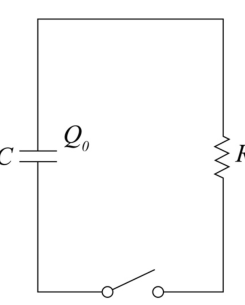
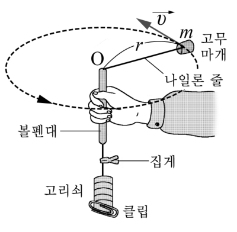
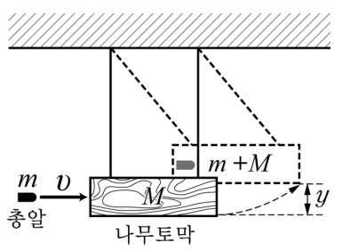

수학적 모형의 전이와 속력을 구하는 여러 방법 — 지수 감소 모형, 구심력 실험 안내서Transferring a mathematical model (exponential decay) · many ways to find speed · lab guide for centripetal force vs speed
여러 물리 현상을 동일한 수학적 모형으로 설명하거나, 하나의 물리 개념이 여러 가지 다른 현상에서 어떻게 나타나는지 생각하는 활동은 과학적 사고에 도움을 준다. <사례 1>은 전기 현상에서 사용한 수학적 모형을 일상적 상황에 적용해 보는 과정의 일부를 제시한 것이고, <사례 2>는 속력을 구할 수 있는 서로 다른 방법 2가지를 제시한 것이다. 【30점】
[전기 현상] 그림과 같은 \(RC\) 회로에서 전하 \(Q_0\)로 충전된 축전기의 전하가 스위치를 닫으면 줄어들기 시작한다. 이때 축전기에 남아 있는 전하량 \(Q(t)\)를 수학적 모형으로 나타내면, \(-\dfrac{dQ}{dt}=\dfrac{1}{RC}Q\)가 된다. 이를 적분하여 \(Q\)를 구하면, \(Q(t)=Q_0e^{-\frac{t}{RC}}\)이다.
[일상적 상황] 얼마 전 철수는 부모님과 함께 자동차를 타고 집으로 가는데, 고속도로에서 차량이 많아져 속력이 점점 줄어들고 있었다. 집까지 90 km가 남았을 때는 차의 속력계가 90 km/h를 나타내었고, 70 km가 남았을 때는 70 km/h를 나타내었다. 다음은 철수와 아버지의 대화 내용 중 일부이다.
철 수 : 이렇게 가면 50 km가 남았을 때는 50 km/h이겠네요. 그러면 집에 언제 갈 수 있나요?
아버지 : 앞으로도 계속해서 남은 거리와 속력이 비례한다면 무한대의 시간이 걸릴 수 있어.
철 수 : 왜요?
아버지 : 그건 수학적 모형을 만들어 설명할 수 있지.
철 수 : 어떻게요?
아버지 : 일단, 남은 거리를 \(x\)라 하고, 그 지점에서 차의 속력을 \(v\)라 하면 ……
[속력 구하는 방법 1]
• 상황: 질량 \(m\)인 고무마개를 줄에 매달아 회전시킨다.
• 방법: 줄의 회전이 거의 한 수평면에서 이루어질 때, 회전 주기 \(T\)와 회전 반지름 \(r\)을 측정하거나, 고무마개의 질량 \(m\)을 알고 고무마개에 작용하는 구심력 \(F\)와 회전 반지름 \(r\)을 측정하면, \(v=\dfrac{2\pi r}{T}\) 식이나 \(F=m\dfrac{v^2}{r}\) 식을 이용하여 등속 원운동하는 고무마개의 속력을 구할 수 있다.
[속력 구하는 방법 2]
• 상황: 질량 \(m\)인 총알이 \(v\)의 속력으로 수평으로 날아와 가벼운 줄에 매달린 질량 \(M\)인 나무토막에 박힌 후 높이 \(y\)까지 올라간다.
• 방법: 총알이 박힌 직후 나무토막이 움직이는 속력을 \(V\)라고 하면, 운동량 보존법칙에 따라 \(mv=(m+M)V\)이고, 에너지 보존법칙에 따라 \(\tfrac12(m+M)V^2=(m+M)gy\)이다. 따라서 \(M\), \(m\), 중력가속도 \(g\)를 알고 \(y\)를 측정하면 \(v\)를 구할 수 있다.



- 어떤 양이 ‘자기 크기에 비례하는 빠르기로’ 줄어들면 지수 함수로 줄어든다: 반으로 줄어드는 시간이 늘 같다.
- 등속 원운동: \(v=2\pi r/T\), 구심력 \(F=mv^2/r\).
- 속력은 운동 방정식 말고도 에너지 보존, 운동량 보존, 파동(도플러), 전자기 유도 등 여러 법칙으로 구할 수 있다.
1-1
<사례 1>의 마지막 대화 내용에 적합한 수학적 모형을 만들어 설명하고, 이와 동일한 수학적 모형으로 설명할 수 있는 서로 다른 현상을 추가로 2가지만 제시하고 설명하시오. 그리고 <사례 2>의 방법들 이외에 물리학의 여러 영역에서 서로 다른 개념이나 법칙을 적용하여 속력을 구할 수 있는 방법 4가지만 <사례 2>처럼 제시하시오. [20점]
- 속력 = 남은 거리가 줄어드는 빠르기: \(v=-\dfrac{dx}{dt}\). ‘속력이 남은 거리에 비례’를 식으로.
- RC 회로의 식과 똑같은 꼴 → 해도 같은 꼴. \(x\)가 0이 되는 시각은?
- ‘양의 변화율 ∝ 그 양’인 다른 현상: 방사성 원소, 식는 물체, 코일의 전류, 매질 속 빛의 세기 …
- 속력을 구하는 영역: 역학(에너지·포물선), 파동(도플러), 전자기(유도·속도 선택기), 광학·현대물리 …
1-2
| 제목 | 등속 원운동하는 물체에 작용하는 구심력과 물체의 속력과의 관계 |
|---|---|
| 실험 목표 | 회전 반지름이 일정할 때, 구심력과 속력의 관계를 구한다. |
| 준비물 | 볼펜대, 고무마개, 나일론 줄, 자, 초시계, 저울, 고리쇠 여러 개, 클립, 집게 |
| 실험 과정 | (작성) |
| 결과 및 해석 | (작성) |
| 정리 | (작성) |
<사례 2>에서 제시한 [속력 구하는 방법 1]의 상황에서 고무마개에 작용하는 구심력 \(F\)와 고무마개의 속력 \(v\)와의 관계를 실험을 통해 구해 보려고 한다. 다음에 제시한 <실험 안내서>의 실험 목표와 준비물을 참고하여 고등학생용 실험 안내서를 완성하시오. [10점]
- 구심력은 무엇이 만드는가? 볼펜대 아래에 매단 고리쇠의 무게가 줄의 장력 = 구심력.
- 반지름을 일정하게 유지하는 방법: 줄에 클립(집게)으로 표시하고 회전 중 표시가 볼펜대 끝에 머물게.
- 속력은 여러 바퀴(예: 20회)의 시간으로 주기를 재서 \(v=2\pi r/T\).
- 조작 변인 = 고리쇠 수(구심력), 통제 변인 = 반지름·고무마개 질량.